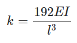

Learning Objectives
After completing this simulation experiment on free vibration of a fixed fixed beam one should be able to
- Model a given real system to an equivalent simplified model of a fixed fixed beam with suitable assumptions / idealizations.
- Calculate the logarithmic decrement, damping ratio, damping frequency and natural frequency of the system
- Find the stiffness and the critical damping of the system.
- Calculate damping coefficient of the system.
Introduction
A system is said to be a Fixed-Fixed beam system if it has a fixed connections at both its ends.
Vibration analysis of a fixed-fixed beam system is important as it can explain and help us analyse a number of real life systems. The following few real system can be simplified to a fixed-fixed beam, thereby helping us make design changes accordingly for the most efficient systems.
Following few figures tell us about the significance of analysing Fixed-Fixed beams and their relevance to the real world.

The above figure depicts a fixed-fixed suspension system and the pillow lock joint at its ends. In machinery too, we can find parts which can be analysed as fixed-fixed beams like in grinding machines and furnaces.
Natural Frequency of Fixed Fixed Beam
When given an excitation and left to vibrate on its own, the frequency at which a fixed fixed beam will oscillate is its natural frequency. This condition is called Free vibration. The value of natural frequency depends only on system parameters of mass and stiffness. When a real system is approximated to a fixed fixed beam, some assumptions are made for modelling and analysis (Important assumptions for undamped system are given below):
- The mass (m) of the whole system is considered to be lumped at the middle of the beam
- No energy consuming element (damping) is present in the system i.e. undamped vibration
- The complex cross section and type of material of the real system has been simplified to equate to a fixed fixed beam
The governing equation for such a system (spring mass system without damping under free vibration) is as below: 
k the stiffness of the system is a property which depends on the length (l), moment of inertia (I) and Young's Modulus (E) of the material of the beam and for a fixed fixed beam is given by:

Damping in a Fixed Fixed Beam
Although there is no visible damper (dashpot) the real system has some amount of damping present in it. When a system with damping undergoes free vibration the damping property must also be considered for the modeling and analysis.
Single degree of freedom mass spring damper system under free vibration is governed by the following differential equation: 
c is the damping present in the system and ζ is the damping factor of the system which is nothing but ratio of damping c and critical damping cc. Critical damping can be seen as the damping just sufficient to avoid oscillations. At critical condition ζ=1. For real systems the value of ζ is less than 1. For system where ζ < 1 the differential equation solution is a pair of complex conjugates. The displacement solution is given by 
where x0 and v0 are initial displacement and velocity and ωd is the damped natural frequency of the system. The damped natural frequency is calculated as below: 

FREE VIBRATION SDOF SYSTEM- expT PROCEDURE
AIM:
To find the damping (c) of the given beam.
PROCEDURE:
Begin
the experiment by clicking
the start experiment button

1. Find logarithmic decrement (δ) from displacement v/s time graph.
The logarithmic decrement is defined as follows.
 Here x1 and xn refer to the displacements at the first and nth peak in the displacement v/s time
graph.
Here x1 and xn refer to the displacements at the first and nth peak in the displacement v/s time
graph.
The displacements at the peaks can be found using the location slider.


2. Find the damping ratio (ζ) from the logarithmic decrement (δ). The damping ratio is given by


3. Find beam stiffness (k) N/m from Young's modulus (E), area moment of inertia (I) and length (L).
The stiffness for different beams is given below


4. Find natural frequency (ωn) rad/s from ωd and ζ .
ζ can found from the FFT in the graph
window.

ߞ

5. Find equivalent mass (meq) kg from ωn and k.


6. Find critical damping (cc) Ns/m from meq and k.
 7. Find damping (c) Ns/m from cc and ζ.
7. Find damping (c) Ns/m from cc and ζ.


RESULT:
System damping c has been found. The basic concepts in free vibration of SDOF systems are
covered.


- Plot the variation of natural frequency of fixed fixed beam with
- Length of Beam
- Lumped mass at center of the beam
- What is the time taken to reduce vibration amplitude to half its initial value? How does it vary with damping ratio


-
Singiresu S. Rao (1990), Mechanical Vibrations, Addison-Wesley Longman Incorporated
Chandramouli Padmanabhan,Marie Dillon Dahleh,William T. Thomson (2008), Theory of Vibrations with Applications, Pearson Education
V. Ramamurthi (2012), Mechanical Vibration Practice and Noise Control, Narosa Publishing House
Haym Benaroya and Mark L. Nagurka (2010), Mechanical Vibration, CRC Press
C Sujatha (2010), Vibration and Acoustics, Mc Graw Hill Education
G K Grover (2009), Mechanical Vibrations, NEM Chand & Bros